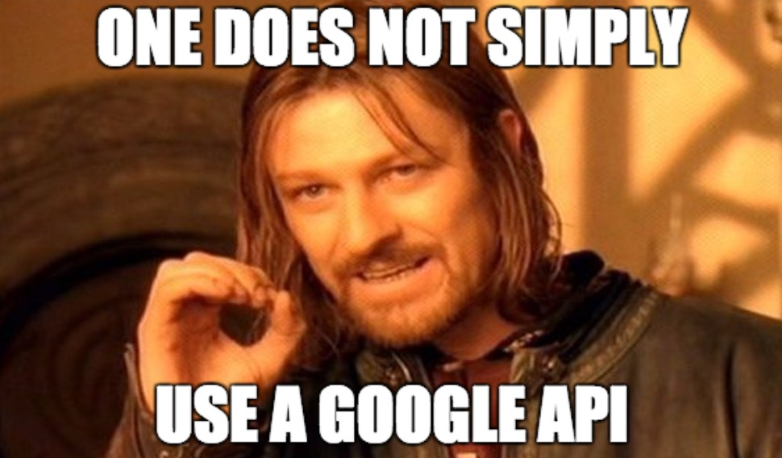

![]()
fix_working_environment <- function(saved_path,
local_path){
# if the folder structure doesn't work as expected...
# this will explode
stringr::str_replace(saved_path,
"some_regular_expression",
local_path)
}I have been thinking about different problems I have when writing code and the things that I normally try to do to keep my projects clean and functional. I wrote this post to put this thoughts out there, hopefully I will receive input from the great software engineers.
Problems in mind
Where do you live?
Code files usually live in one folder, which is also a GitHub folder that you and your team commit/push to. So far, so good. But what do you do with the data to feed that monster pipeline of yours?
I will assume that your concerns with data privacy are minor or you handled them accordingly (only private parties have access to the data).
Now, you still have the problem of where to put this other folder, which is basically a size problem.
Small files can live with your data
This is the case for small and few text files of some thousand rows. Easy enough, you just go with your /repo-name/data/ and live happily ever after.
Medium size files
These files are big enough to be a problem for hosting on GitHub. File formats start to be an issue here, images and video will not be easily accessible anywhere you take it.
Options: the cloud ☁️
Pros: It’s fluffy. Now, seriously, it’s good that your code can point to one place, download the stuff into local and use it. Every computer can do the same and there should be no problem. Because your sizes are not huge, you should be fine.
Cons: You need internet. No, internet it’s not everywhere all the time1. Internet is not in my cellphone on a second basement in a concrete building. Even with the fastest internet, it’s not trivial to setup your-favorite-cloud-service to allow access to the-sketchy-script-you-wrote2.

Options: Good old-fashioned external hard drive. 💾
Pros: This is a good one if your data size is in the Gb range and you don’t really need to share it with too many people.
Cons: Hard drives fail. Are you ready to lose your data? It starts to get really annoying when you have to do back-ups of your data and your data is big enough that you can’t use your computer’s hard drive (that’s why you chose an external hard drive in the first place). Should you have an external hard drive for the external hard drive? Are you planning to write the output of your code on those hard drives? Brace for impact.

External hard-drives might have paths that change depending on which computer is connected to. This can easily be a path inferno. Moreover, some hard drives don’t work if you try to use them in different OS.
Large sizes
I work with brains. Last time I checked, one mouse brain is ~2TB, n=1, just a few channels, not even the best resolution we can get.
I think local/cloud servers are the only way to go here3. I don’t have a lot of experience with this, but I have suffered internet upload/download speed problems when I try to sync with my cloud back-ups or share image/video files with my team.
Paths need to be absolute
Because your working directory is the folder where your code lives4, but your data folder lives elsewhere, you kind of need to use absolute paths all the time.
I have only been able to fix this issue using functions that attempt to fix this when running the script.
This is particularly annoying when you have to run commands that involve calling things from console.
Let’s call ImageJ from R.
system(paste("/home/matias/Downloads/Fiji.app/ImageJ-linux64 --run",
macro_to_run))The moment somebody changes the Fiji folder, or tries to call ImageJ from another computer, that code brakes. I’m unaware of how to make sure these things bullet-proof, please enlighten me.
Let’s call python from R. Wait, what version of python do you want? I rest my case.
Processes are identified by the files
I have this problem quite often. It might be because my pipelines follow this logic.
It’s quite difficult to escape the infinite list all files –> apply function to all files –> write computations into new files loop. I don’t really know what’s on the other side.
The main problem is that your previous, current, and next files always serve as identifiers and you need to carry over their absolute path (to be able to read them form your data folder). Whenever these paths get corrupted (or you change your computer) things stop working.
This problem might stem from the fact that I normally have to process experimental units through the pipeline. I have to do many things to an experimental unit and have many many experimental units composing the data for one pipeline. That’s when my inner voice goes:
But I would also like to have the possibility to run or re-run just one (or just a few experimental units).
The way I handle this is by leaving open the door to hand selection of files (aka interactive mode, not fun). However, interactive mode somewhat helps with the problem below.
Don’t move my files
People do stuff people normally do, like moving folders around…that’s BAD, REALLY BAD. It’s also quite difficult to communicate the need to keep the file structure without casting the magic spells of everything will break5.
I don’t feel good with the level of dependency on file structure that my projects always end up having. Please enlighten me on this one too!
Don’t rename my files
Don’t rename my files, except when I do. That would be a better subtitle of this section. A great way of not dealing with multiple copies of the same files. For example, let’s say you applied a mask to an image and then cropped, and rotated it. How many files do you keep? What if your image size was 1 Gb?
My hack around this is to rename the files (this include the cases where I just want to move files to specific sub-folders). Because I rely so much on the file names, this renaming usually comes back to bite me. I just 🤷.
Operating systems
I’m writing this in 2019, I thought the OS problem was solved. Turns out it’s not solved at all and developers shy away from it more often than they should. I understand them, developing for every OS is a huge pain and requires you to constantly check in multiple machines (or have access to a teammate that breaks your code as soon as you push it).
What is your approach?
This is something I will continue to think for a long time, and my approach might need to be adjusted to each situation. What is your current approach?
Footnotes
Reuse
Citation
BibTeX citation:
@online{andina2019,
author = {Andina, Matias},
title = {On Pipelines},
date = {2019-11-14},
url = {https://mauribo2.github.io/WebSite/posts/2019-11-14-on-pipelines/},
langid = {en}
}
For attribution, please cite this work as:
Andina, Matias. 2019. “On Pipelines.” November 14. https://mauribo2.github.io/WebSite/posts/2019-11-14-on-pipelines/.